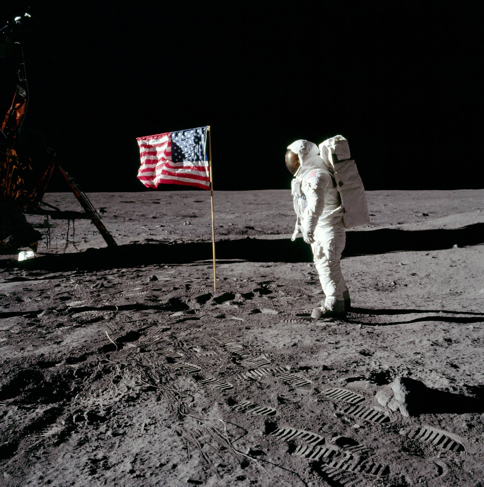
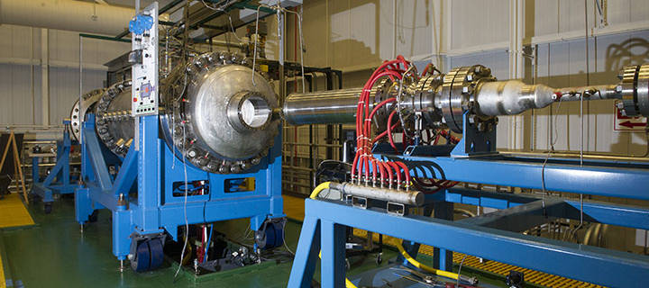

The history of space exploration begins in Nazi Germany with the V-2 rocket, the world’s “first long range ballistic missile”. Developed by Von Braun and his colleagues as the vengeance weapon number two, it showed the potential of rockets. This potential was soon realized on October 3, 1942 when third V-2 rocket sailed 120 miles toward its target. Towards the end of the war Hitler ordered the execution of all his scientist so that they wouldn’t fall into enemy hands but Von Braun was able to avoid this fate by deserting to the Americans. While originally in the located in the desert in New Mexico, they moved to Cape Canaveral Florida in order to get more room for their launches. From here they launched countless rockets, including the one that carried America’s first satellite, Explorer I. Alan Sheppard’s and Gus Grissom’s suborbital flight 3 years later paved the way for John Glenn’s first orbital flight. Von Braun’s team came to NASA two years after its inception and worked for years on national defense measures.

However it was with John F. Kennedy’s immortal words that we began the space race. “We choose to go to the moon. We choose to go to the moon in this decade and do the other things, not because they are easy, but because they are hard, because that goal will serve to organize and measure the best of our energies and skills, because that challenge is one that we are willing to accept, one we are unwilling to postpone, and one which we intend to win, and the others, too.” Only seven years later did we touch down on the Moon’s Sea of Tranquility. This was marked by Neil Armstrong's accidentally saying that it was “one small step for man, and one giant leap for Mankind”, rather than the prepared one small step for A man etc. Regardless, this monumental step in space exploration did not mark the end of human endeavors into space.

Following the Apollo program, the United States of America built its first space station, Skylab. This showed a shift away from the mere exploration focused space program to one that concerned itself more with the usage of space. From this new way of looking at the space program, came the space shuttle, a reusable method of transport to space. The idea of the space station grew in 1984, with Reagan directing NASA to build the ISS and the first module launching in 1998 from Russia. The US launched another segment the same year and in 2000, the first crew to reside in the ISS was sent up. Since then modules from North America, Europe and Asia have been sent up.

Another advancement in space exploration technology was the NERVA space engine. Created by the US Atomic Energy Commission along with NASA, it demonstrated the use of nuclear thermal rocket engines. It evolved from the KIWI engine which was named after the flightless New Zealand bird, how it stopped advancing when political will was lost due to the cost of space exploration. However thoughts on its potential uses continued to grow, from tugging payloads from low to larger orbits, to combining it with the Saturn rocket to allow it to carry payloads up to 340,000 pounds. The NERVA provided the advantage of shorter flight durations, reduced exposure to cosmic rays because of the shorter flight durations, and it was twice as efficient.